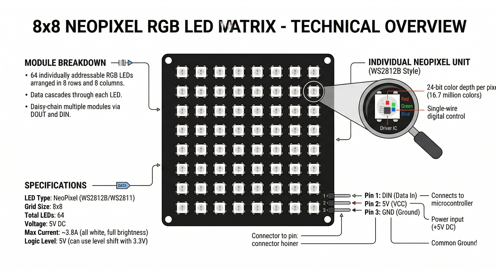

The NeoPixel 8x8 Matrix is an array of 64 individually addressable RGB LEDs (NeoPixels) arranged in a grid. Each LED contains its own WS2812 driver chip, allowing you to control thousands of colors using just a single digital pin.

NeoPixels are "smart" LEDs that use a high-speed serial communication protocol:
| Pin | Function |
|---|---|
| VCC / +5V | Power supply. Connect to Arduino 5V (requires a decent power supply for high brightness). |
| DIN / DI | Data Input. Connect to any digital pin (recommended Pin 6). |
| GND | Common ground connection. |
In OpenHW Studio, the NeoPixel matrix will render colors dynamically as your simulation runs. Note that driving all 64 LEDs at full white (255, 255, 255) consumes a lot of virtual current!
You must install the Adafruit_NeoPixel library via the Library Manager.
#include <Adafruit_NeoPixel.h>
#define PIN 6
#define NUMPIXELS 64 // 8x8 matrix
Adafruit_NeoPixel pixels(NUMPIXELS, PIN, NEO_GRB + NEO_KHZ800);
void setup() {
pixels.begin(); // INITIALIZE NeoPixel strips object
}
void loop() {
pixels.clear(); // Set all pixel colors to 'off'
// Fill the matrix with a color sequence
for(int i=0; i<NUMPIXELS; i++) {
pixels.setPixelColor(i, pixels.Color(0, 150, 0)); // Moderate Green
pixels.show(); // Send the updated color to the hardware
delay(50);
}
}